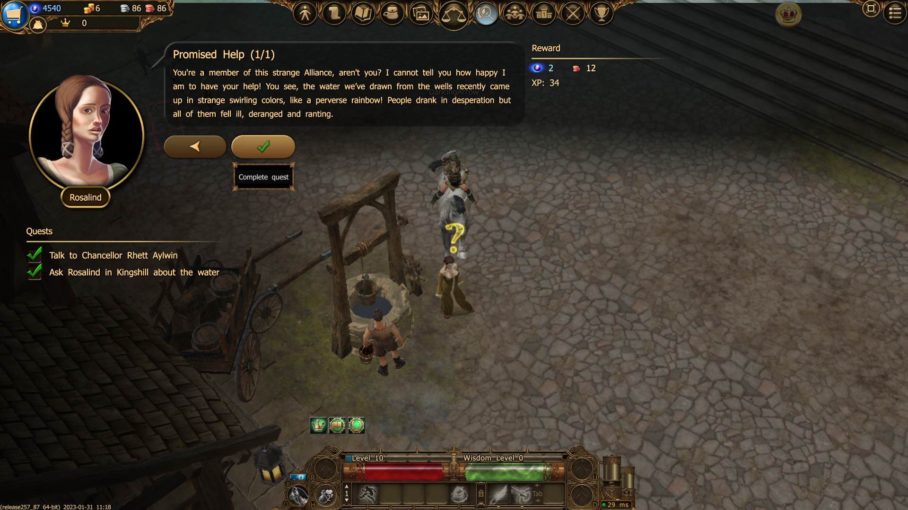
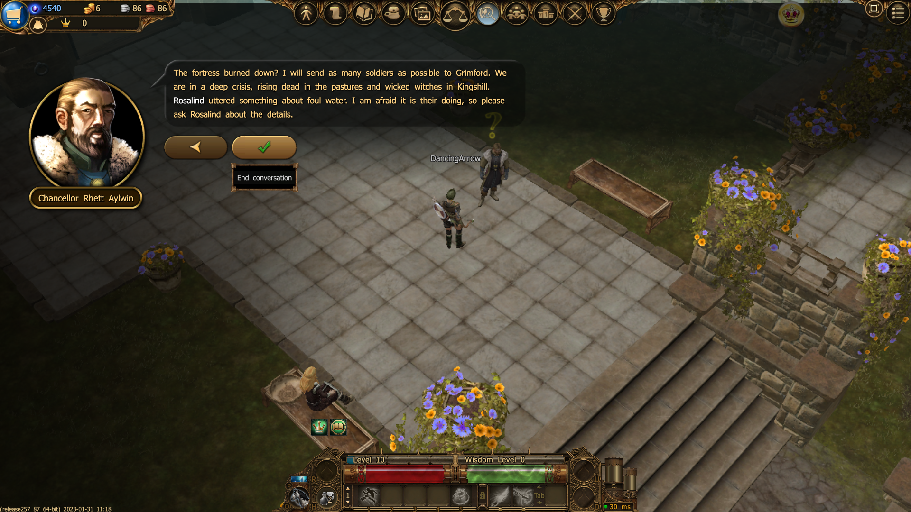
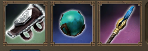
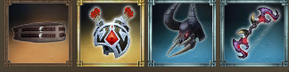
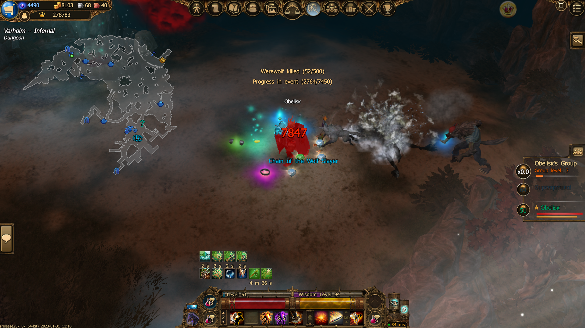
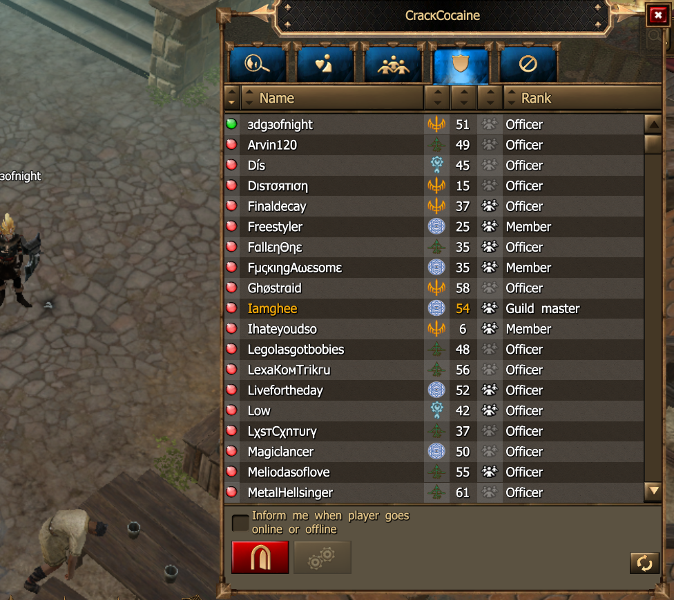
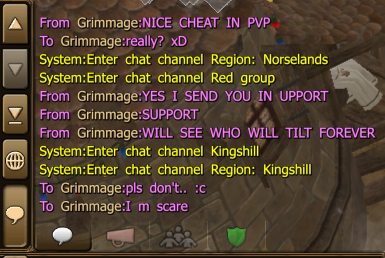
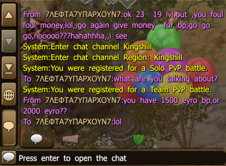
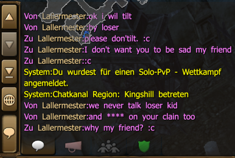
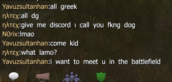

During their journeys, the brave warriors of Dracania pass through numerous cities and areas in the world of, Drakensang Online, helping people in need by completing quests they are given, from collecting an item like a herb or a hat to slaying powerful beasts and preserving the peace.
 With each challenge passed, the next one becomes increasingly more difficult. Just like mobs, so do player characters have levels, starting from level 1 up to the maximum level 100. The gear the player uses also has levels, the player is able to equip items up to +45 levels above their own, thus the max level item a player can obtain is 145 which is the level of the most powerful mobs and bosses in the game as well. The game maps have different levels of difficulty, starting from "normal" up to "bloodshed".
The items the players use also vary in rarity, from normal items, to improved, extrodinary, legendary and unique items which sometimes have special powers unique to them(thus their names).
 Items can be obtain in different ways, by collecting the right 'ingredients' and 'materials' + a normal item using "glyphs of power" the players can craft equipment on the "workbench". And also, by farming/killing monsters/bosses, items can be dropped.
The game also supports the concept of "guilds". Players can create guilds and give them names, with up to 50 players max. In a guild, a member is either: member, officer, guildmaster/owner. The guild officers and guildmaster can invite new members, write guild messages that appear in the guild chat, as well as promote members to officers and kick off members with a rank under theirs. Additionally the guildmaster can kick both officers and normal members, change the guild name, and promote normal members to officers, and officers to guildmaster, passing the ownership of the guild to another player. There is only 1 guildmaster per guild.
Drakensang Online also has ingame chat where players can communicate and help eachother.
 Don't worry, the playerbase is incredibly friendly and welcoming. ^_^
 